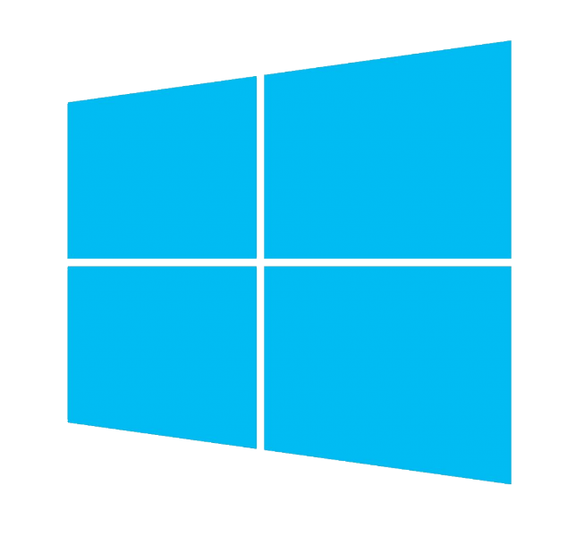

Microsoft Windows is a Graphical Interface Operating System which has been developed by Microsoft Corporation. Microsoft Windows is a very friendly, popular and most used operating system which is very popular among people because of its graphical display.
Windows operating system uses icons and tools to simplify complex operations of the computer.
Before the release of Microsoft Windows Graphical OS, users used to work on the command line of MS-DOS OS.
Microsoft wanted to keep its product’s name simple and unique and something which defined the GUI interface of Microsoft so the name “Windows” was chosen as in its GUI multiple windows are used to run different tasks and programs.
So Windows was added to Microsoft and the new name of the company came forward as Microsoft Windows.
First and latest windows OS:
Before the onset of
Windows commands had to be memorized in MS-DOS but after the launch of
Microsoft Windows one can navigate in GUI with menu, buttons, tabs, dialog
boxes, icons and other GUI options and perform tasks. The first Windows version
of Microsoft, Windows 1.0 was released in 1985. After that many versions were
released which were improvements of the earlier version. Linux and apple OS
were also launched in between but they were not as popular as Windows. The
latest version of Windows is Windows 10.
Windows popular features:
The Windows versions launched after DOS had many user-friendly functions like native windows file manager, program manager, print manager etc added with a dynamic interface. Specialized Windows packages like Windows for Work-group, domains and high powered Windows NT, Windows server 2003, 2008, 2012, 2016 and other network management friendly OS were launched.
Microsoft had success in computers, laptops and servers and launched OS for mobiles too but that didn’t go well. The most successful platform for mobile is Android till date. Microsoft admitted in 2014 that its way back then Android.
The year 2016 was very existing for Microsoft users as Microsoft Windows New Version was launched for PC, tablets, smartphones and embedded devices. The new operating system was also launched for Windows server which is called Windows Server 2016.
Windows
Family OS names :
- DOS based OS – 1.0, 2.0,2.1x, 3.0, 3.1x
- Windows 9x – Windows 95, 98, ME
- Windows NT – NT 3.1, 3.5, 3.51, NT 4.0, Windows 2000, Client
Version – XP, Vista, Windows 7, windows 8, windows 10. Server – 2003, 2008,
2012 and 2016
- Windows Embedded – Embedded Compact – CE 5.0, 6.0, 7.0,
Embedded Automotive
- Windows Mobile – PC 2000, PC 2002, Mobile 2003, Mobile 5.0,
6.0, 6.1, 6.5
- Windows Phone – Windows Phone 7, 8, 8.1, 10 Mobile